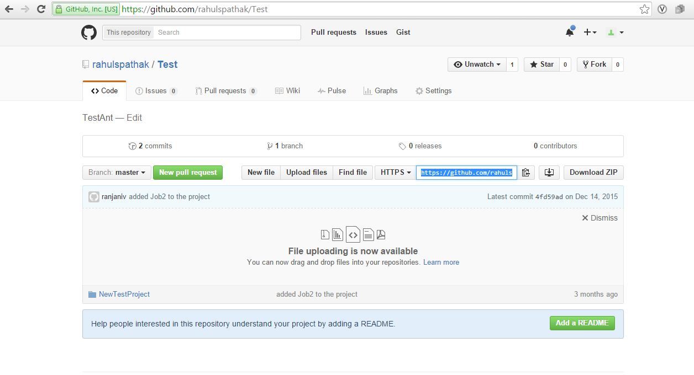

Accelero Help
Accelero Help
GIT-How to Check in Jobs/Project
Accelero Release Version 1.0
To Export Project to Git Hub from our local workspace Right Click Project Explorer -> Team -> Share Project
Click OK on the Home directory window and proceed further.
Create a new repository and provide a name.
Click on finish. No need to add Path within Repository. Right click -> Team ->Show in Repository View
This will show the project in the repository view. Copy the Repo URL from GitHub

Trace your project and Right Click -> Remotes -> Path Repository or URI.

This will open a window with the URI already copied.
Enter your Git Hub username and password -> Next -> Browse the directory and find your project that needs to be exported
Check ->Import all existing projects after clone finishes click on Finish and wait for the cloning.
Once clone is done, right click -> Project -> Team -> Commit
Enter a Commit message, select all files you want to Check in to Git Hub. Then Commit
Right Click Project ->Team ->Remote -> Push
Copy the Git Hub URI again, enter your credentials and click Next
p>Select Add All Branches Spec and Add All Tags Spec -> Click on Force Update and Finish p>Check on Git Hub. The project should be exported and visible